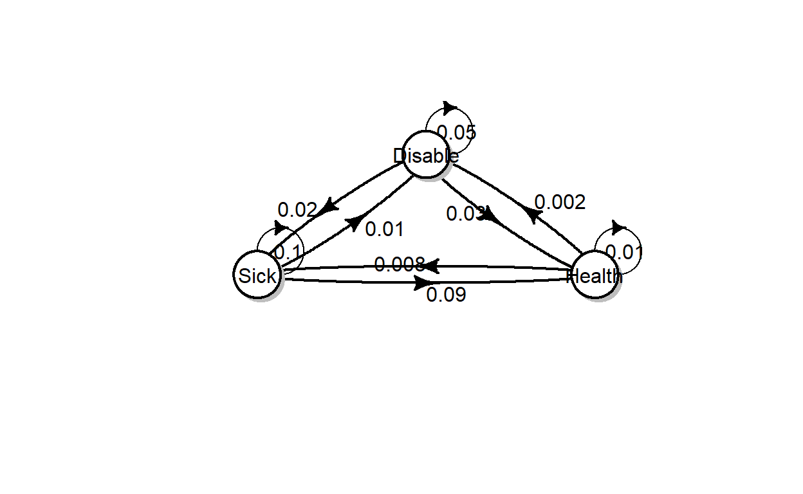
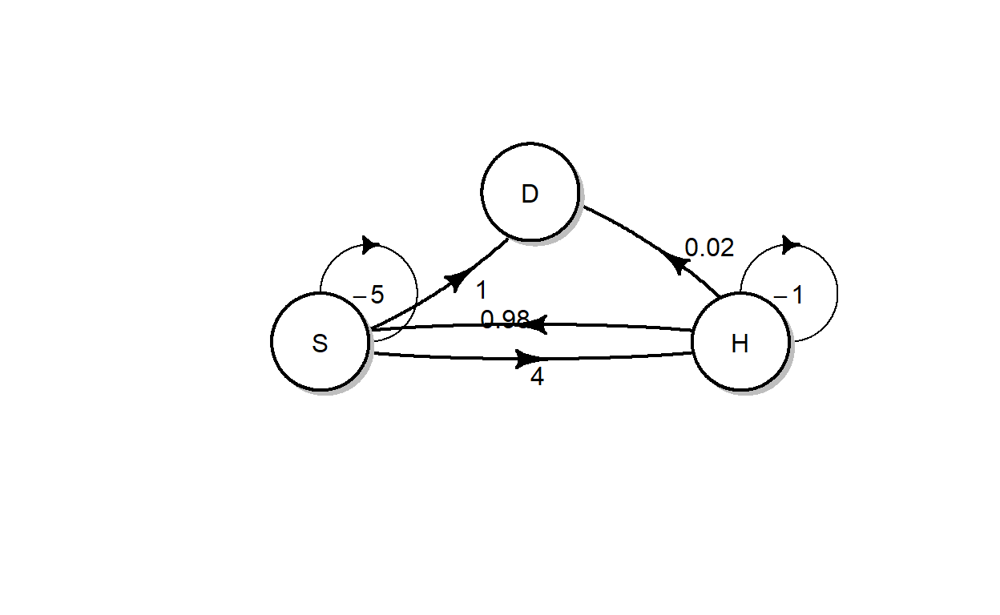
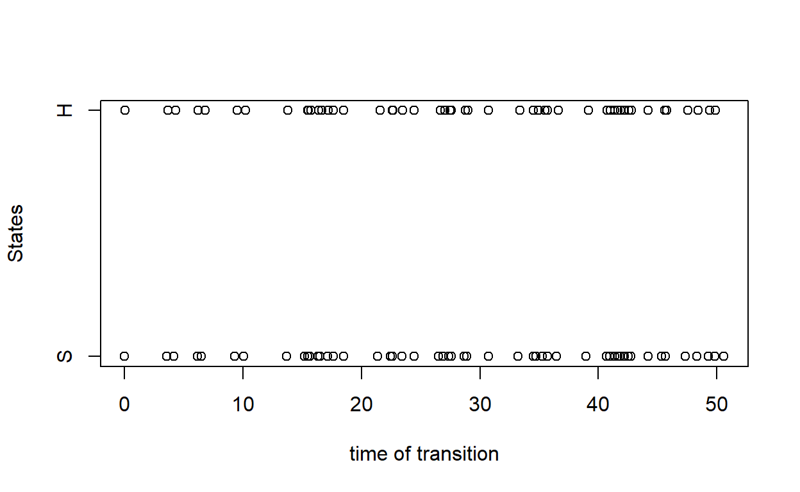

In this tutorial we aim to discuss the application of continuous time Markov chains (MC) in R by using the package markovchain (Spedicato 2017).
This tutorial will consist of three parts: Markov chain objects in R, properties of a continuous Markov chain, and simulation and parameter estimation of a Markov chain.
Note that the markovchain and diagram (Soetaert 2017) packages (the latter is only used to create transition diagrams) have been loaded in the current R workspace. Therefore you can utilise the capacities of these packages without explicitly loading it. Furthermore, we focus on the continuous time Markov chains in this tutorial, although the package also covers functions for discrete time Markov chains.
However, if you are using the packages outside this tutorial remember to first install the packages with the code:
install.packages("markovchain", dependencies = TRUE)
install.packages("diagram", dependencies = TRUE)And then load them with the instruction
library("markovchain")
library("diagram")RRHere we use a simple two-state Markov chain that models the health states of an individual. In order to specify a MC object in R, one needs to specify the transition matrix (also called the generator) of the MC.
In the following example, we create a matrix object called health_tran as the transition matrix. Note that we also specify the names of the cells for this matrix.
health_states <- c("H", "S") # names of states
health_states## [1] "H" "S"# note that dimension names are specified
health_tran<- matrix(data = c(-1, 1,10, -10), nrow = 2,
byrow = TRUE, dimnames = list(health_states, health_states))
health_tran## H S
## H -1 1
## S 10 -10Now we will create a MC based on the transition matrix we specify.
health_mc <- new("ctmc", states = health_states,
byrow = TRUE, generator = health_tran,
name = "Health-Sickness MC")
health_mc## An object of class "ctmc"
## Slot "states":
## [1] "H" "S"
##
## Slot "byrow":
## [1] TRUE
##
## Slot "generator":
## H S
## H -1 1
## S 10 -10
##
## Slot "name":
## [1] "Health-Sickness MC"One can visualise the transitions of a MC by using the plot function. Here we use a three-state MC as an example.
disable_states <- c("Health", "Sick", "Disable") # names of states
disable_tran<- matrix(data = c(
-0.01, 0.008, 0.002,
0.09, -0.1, 0.01,
0.03, 0.02, -0.05),
nrow = 3, byrow = TRUE, dimnames = list(disable_states, disable_states))
disable_mc <- new("ctmc", states = disable_states,
byrow = TRUE, generator = disable_tran,
name = "Disability MC")
plot(disable_mc, package="diagram", box.size = 0.06)
Suppose that you are given the following transition diagram for the change of an individual’s heath status (Heath, Sickness or Death).

# states
example_states <- c("H", "S", "D")
# transition matrix
example_marix<-
# display the matrix
example_marix
# create the MC
# display the transition diagram# states
example_states <- c("H", "S", "D")
# transition matrix
example_marix<- matrix(data = c(
-1, 0.98, 0.02,
4, -5, 1,
0,0,0),
nrow = 3, byrow = TRUE, dimnames = list(example_states, example_states))
# display the matrix
example_marix
# create the MC
example_mc <- new("ctmc", states = example_states,
byrow = TRUE, generator = example_marix,
name = "Heath-Sickness-Death")
# display the transition diagram
plot(example_mc, package="diagram",box.size = 0.1)One important calculation of a MC is the evaluation of the limiting probabilities. In R, one can calculate the limiting probabilities by using the steadyStates function.
steadyStates(health_mc)## H S
## [1,] 0.9090909 0.09090909Given a continuous time MC, there exists an embedded MC (which is a discrete time MC by definition). One can use the generatorToTransitionMatrix to calculate the transition probability matrix of the embedded MC.
Note that the generatorToTransitionMatrix applies to the generator of a MC, instead the MC object itself.
With the previous example of the two-state MC, the transition probability matrix of the embedded MC is simply a diagonal matrix.
health_tran # generator## H S
## H -1 1
## S 10 -10generatorToTransitionMatrix(health_tran) # embedded MC## H S
## H 0 1
## S 1 0With the example of the three-state MC, the embedded MC is slightly more complex.
disable_tran # generator## Health Sick Disable
## Health -0.01 0.008 0.002
## Sick 0.09 -0.100 0.010
## Disable 0.03 0.020 -0.050generatorToTransitionMatrix(disable_tran) # embedded MC## Health Sick Disable
## Health 0.0 0.8 0.2
## Sick 0.9 0.0 0.1
## Disable 0.6 0.4 0.0One can check whether a MC is irreducible and/or time reversible.
# Is a MC irreducible?
is.CTMCirreducible(disable_mc)## [1] TRUE# Is a MC time reverible?
is.TimeReversible(disable_mc)## [1] FALSEIn practice, one may need to evaluate the transition probabilities over discrete time intervals. For example, given the previous three state MC model, one may want to evaluate the probabilities of an individual being disabled at time 1.5, given that he/she is healthy at time 0.
In R, one can use the probabilityatT function to return a matrix of transition probabilities over a discrete time horizon of 1.5.
probabilityatT(disable_mc,1.5)## Health Sick Disable
## Health 0.98594366 0.01110376 0.002952585
## Sick 0.12476142 0.86163944 0.013599143
## Disable 0.04491223 0.02707360 0.928014170and one can read the required probability in the first row and third column.
Alternatively, one can further specify that the initial state is Health, by stating the initial state argument to be 1.
probabilityatT(disable_mc,1,1.5)## [1] 0.990426094 0.007594640 0.001979266Suppose that the change of weather patterns of City X follows a continuous time MC with three states: Sunny (S), Cloudy (C), and Rainy (R). The MC object, weather_states, has been created as follows. Note the unit of time is day.
weather_states <- c("S", "R", "C")
weather_tran<- matrix(data = c(
-0.1, 0.08, 0.02,
0.35, -0.5, 0.15,
0.2,0.2,-0.4),
nrow = 3, byrow = TRUE, dimnames = list(weather_states, weather_states))
weather_mc <- new("ctmc", states = weather_states,
byrow = TRUE, generator = weather_tran,
name = "Sunny-Cloudy-Rainy")weather_states <- c("S", "R", "C")
weather_tran<- matrix(data = c(
-0.1, 0.08, 0.02,
0.35, -0.5, 0.15,
0.2,0.2,-0.4),
nrow = 3, byrow = TRUE, dimnames = list(weather_states, weather_states))
weather_mc <- new("ctmc", states = weather_states,
byrow = TRUE, generator = weather_tran,
name = "Sunny-Cloudy-Rainy")steadyStates(weather_mc)Given that the following R codes and results, answer the multiple choice question at the end.
probabilityatT(weather_mc,3)## S R C
## S 0.8268973 0.1198460 0.05325675
## R 0.5467253 0.3100969 0.14317776
## C 0.4429703 0.2028500 0.35417970The rctmc function allows one to simulate MC transitions. Now let’s use the two-state Health-Sick model, and the following R codes will simulate the transition from time 0 to 20. Here one needs to state the MC object in the ctmc argument, and also provide the length of time in the T argument. While the T argument is used, one needs to set n to be Inf. Here, n represents the number of samples to generate.
rctmc(n = Inf, ctmc = health_mc, T = 20)## [[1]]
## [1] "H" "S" "H" "S" "H" "S" "H" "S" "H" "S" "H" "S" "H" "S" "H" "S" "H" "S" "H"
## [20] "S" "H" "S" "H" "S" "H" "S" "H" "S" "H" "S" "H" "S" "H" "S" "H" "S" "H"
##
## [[2]]
## [1] 0.000000 3.936126 4.173707 4.250070 4.274359 4.550181 4.596363
## [8] 4.829685 4.923047 5.251101 5.266944 6.110717 6.147849 8.180369
## [15] 8.339726 9.163754 9.262072 9.870807 9.890816 10.505170 10.505796
## [22] 11.845990 11.896268 12.027802 12.107544 12.690841 12.722521 16.230769
## [29] 16.399247 16.846369 16.913136 17.757076 17.794000 18.800676 19.034520
## [36] 19.382532 19.404287Alternatively, one can specify the number of transitions (that is, n). In this case, T is no longer required. Furthermore, one can also provide the distribution of the initial states.
rctmc(n = 5, ctmc = health_mc, initDist = c(0.2, 0.8), include.T0 = FALSE)## [[1]]
## [1] "S" "H" "S" "H" "S"
##
## [[2]]
## [1] 1.348920 1.377110 4.622789 4.690170 5.155199rctmc(n = 5, ctmc = health_mc, initDist = c(0.2, 0.8), include.T0 = TRUE)## [[1]]
## [1] "S" "H" "S" "H" "S" "H"
##
## [[2]]
## [1] 0.0000000 0.1366525 1.9290084 2.1554103 2.4576143 2.4744877If we choose include.T0 = FALSE, then the output will start from the first transition (e.g. if the first state is S, then it means at that time there is a transition from H to S); if include.T0 = TRUE is used, then the output will start from time 0 (that is, the output will show the first state at time 0).
One can plot the simulated MC chain by using the plot function. Given that the states are not numerical, one needs to specify numerical values on the y-axis corresponding to the states. In the following example, we plot H and S states at 2 and 1.
health_simu <- rctmc(n = 100, ctmc = health_mc, initDist = c(0.2, 0.8), include.T0 = TRUE)
health_y <- (health_simu[[1]]=="H")*2 + (health_simu[[1]]=="S")*1
plot(health_simu[[2]], health_y, xlab="time of transition", ylab="States", yaxt="n")
axis(2, at=c(1,2), labels=c("S","H"))
One can use the ctmcFit function to estimate the parameters of a MC. In the following example, we estimate the parameters of the two-state MC given the simulated path we just created.
health_fit<-ctmcFit(health_simu)
health_fit$estimate## An object of class "ctmc"
## Slot "states":
## [1] "H" "S"
##
## Slot "byrow":
## [1] TRUE
##
## Slot "generator":
## H S
## H -1.064430 1.064430
## S 8.883122 -8.883122
##
## Slot "name":
## [1] ""Note that the data that is provided for the ctmcFit should include the initial time 0. In the above example, we specify include.T0 = TRUE, therefore this condition is satisfied for this simulated dataset.
Use the disable_mc MC object. Simulate the transitions of health-sickness-disability for 100 days. You should use the limiting probabilities as the initial distribution.
disable_states <- c("Health", "Sick", "Disable") # names of states
disable_tran<- matrix(data = c(
-0.01, 0.008, 0.002,
0.09, -0.1, 0.01,
0.03, 0.02, -0.05),
nrow = 3, byrow = TRUE, dimnames = list(disable_states, disable_states))
disable_mc <- new("ctmc", states = disable_states,
byrow = TRUE, generator = disable_tran,
name = "Disability MC")# calculate the limiting probabilities
# simulate the MC for 100 days
# display the results# calculate the limiting probabilities
disable_limit<-steadyStates(disable_mc)
# simulate the MC for 3000 days
simu<-rctmc(n = Inf, ctmc = disable_mc, initDist = disable_limit, T=100, include.T0 = TRUE)
# display the results
simuNote that if you run your code multiple time you will get every time a new realisation of the Markov chain
Soetaert, Karline. 2017. Diagram: Functions for Visualising Simple Graphs (Networks), Plotting Flow Diagrams. https://CRAN.R-project.org/package=diagram.
Spedicato, Giorgio Alfredo. 2017. “Discrete Time Markov Chains with R.” The R Journal, July. https://journal.r-project.org/archive/2017/RJ-2017-036/index.html.